Amendment #253 (S.O. 1037(E), 2000)
5 changes: 3 to the First Schedule, 2 to the Second Schedule. 5 applied
What it did to the ministries
- spun offMinistry of Shipping is separated from Ministry of Surface Transport (35 subjects) change 2, 3, 5 · histories: Surface Transport, Shipping
- spun offMinistry of Road Transport and Highways is separated from Ministry of Surface Transport (21 subjects) change 1, 3 · histories: Surface Transport, Road Transport
The order, page by page
Page 1 of 12
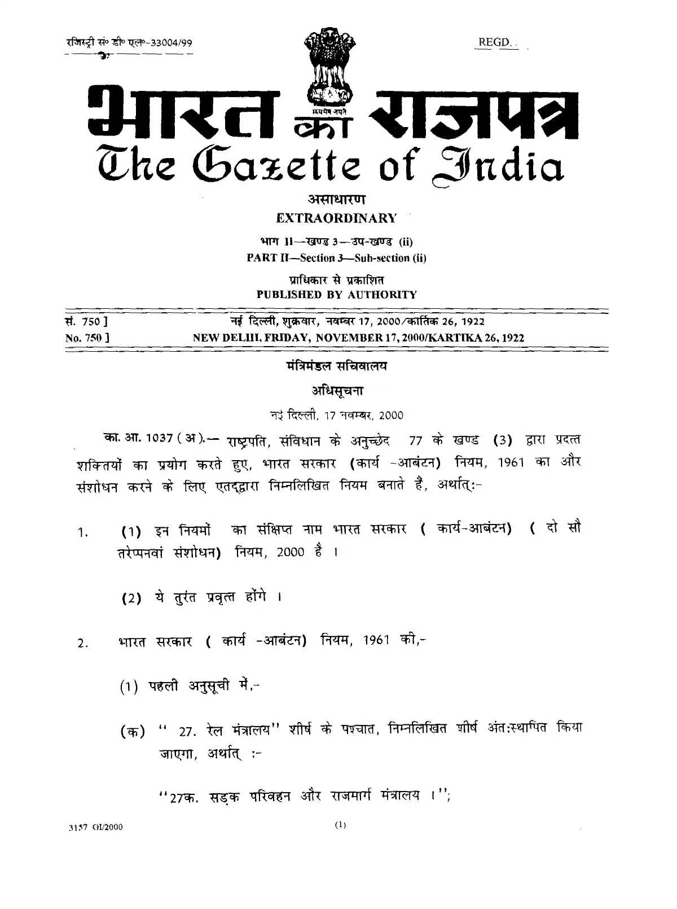
Page 2 of 12
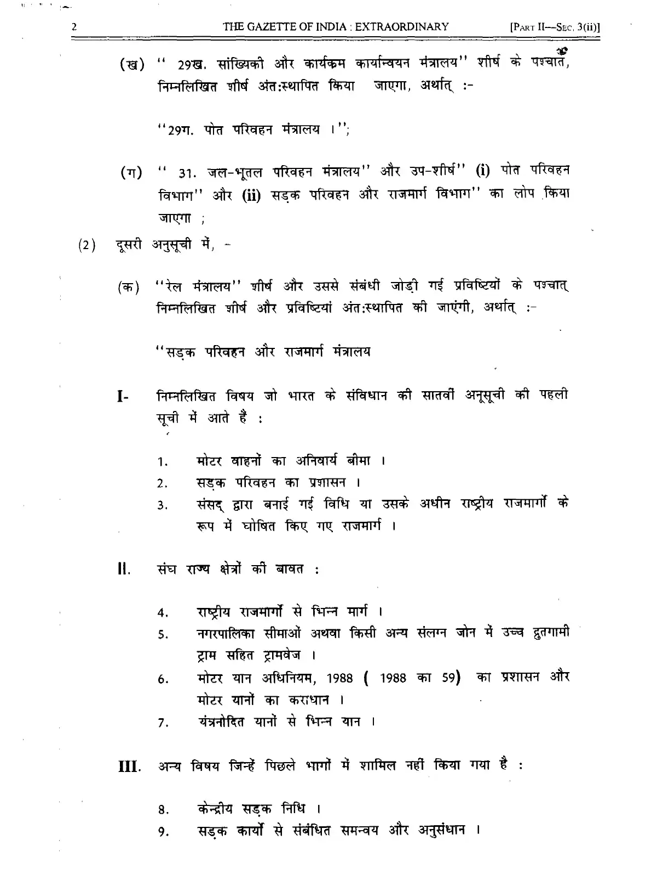
Page 3 of 12
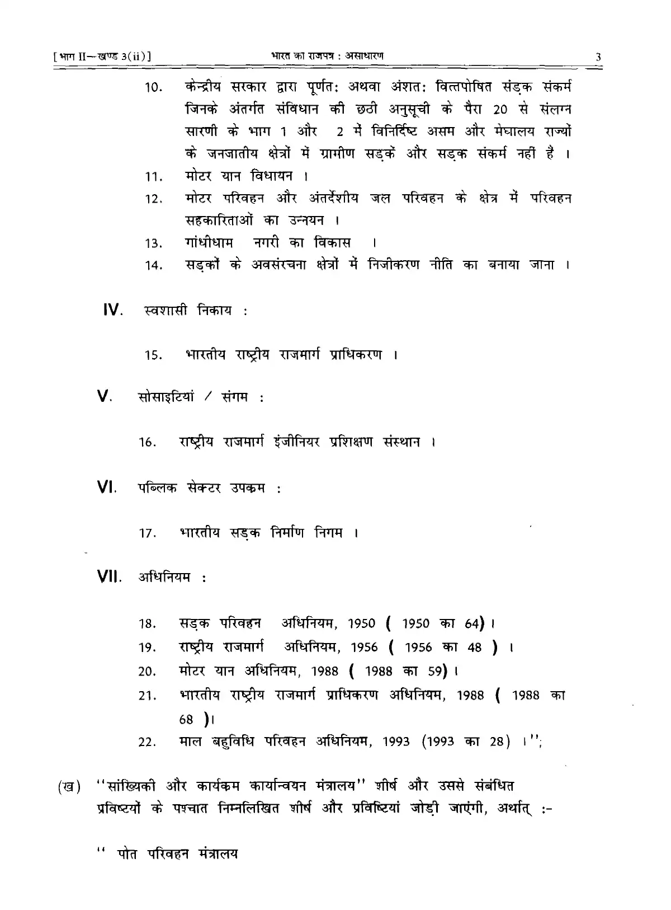
Page 4 of 12
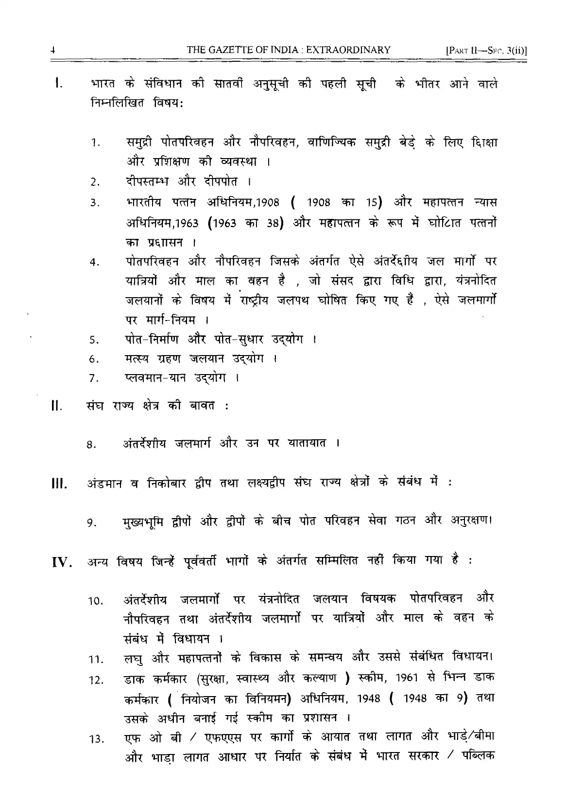
Page 5 of 12
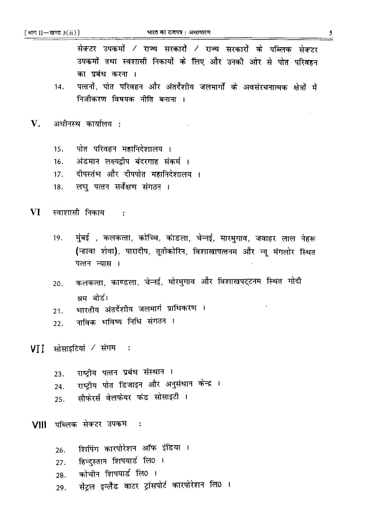
Page 6 of 12
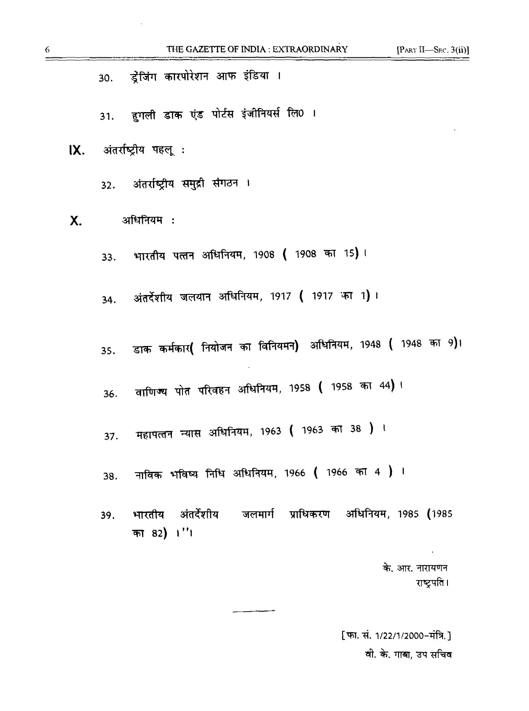
Page 7 of 12
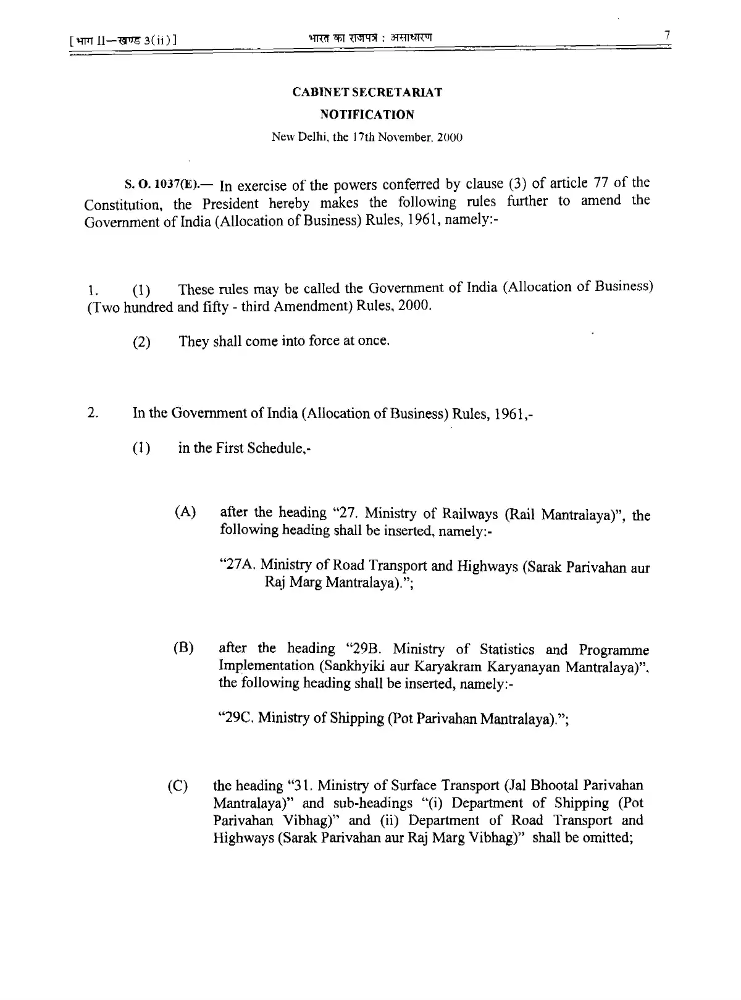
123after Schedule 1 › Ministry of Railways
- 27A. Ministry of Road Transport and Highways
applied at schedule 1 › ministry 27A in the Rules after #253
after Schedule 1 › Ministry of Statistics and Programme Implementation
- 29C. Ministry of Shipping
applied at schedule 1 › ministry 29C in the Rules after #253
new text differs
Schedule 1 › Ministry of Surface Transport
applied at schedule 1 › ministry 31 in the Rules after #253
Page 8 of 12
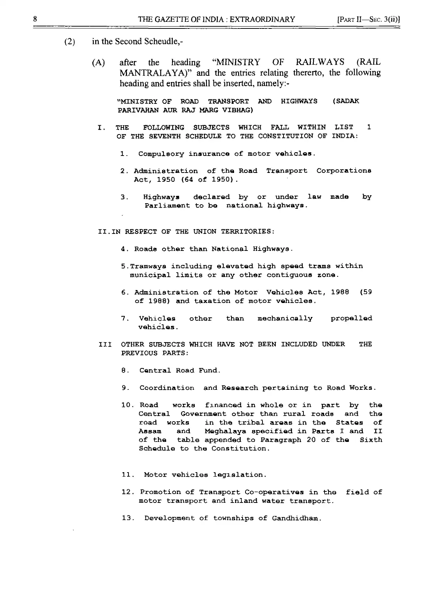
4after Schedule 2 › MINISTRY OF RAILWAYS
- MINISTRY OF ROAD TRANSPORT AND HIGHWAYS
- I. THE FOLLOWING SUBJECTS WHICH FALL WITHIN LIST 1 OF THE SEVENTH SCHEDULE TO THE CONSTITUTION OF INDIA:
- 1. Compulsory insurance of motor vehicles.
- 2. Administration of the Road Transport Corporations Act, 1950 (64 of 1950).
- 3. Highways declared by or under law made by Parliament to be national highways.
- II. IN RESPECT OF THE UNION TERRITORIES:
and 23 more
- 4. Roads other than National Highways.
- 5. Tramways including elevated high speed trams within municipal limits or any other contiguous zone.
- 6. Administration of the Motor Vehicles Act, 1988 (59 of 1988) and taxation of motor vehicles.
- 7. Vehicles other than mechanically propelled vehicles. III OTHER SUBJECTS WHICH HAVE NOT BEEN INCLUDED UNDER THE PREVIOUS PARTS:
- 8. Central Road Fund.
- 9. Coordination and Research pertaining to Road Works.
- 10. Road works financed in whole or in part by the Central Government other than rural roads and the road works in the tribal areas in the States of Assam and Meghalaya specified in Parts I and II of the table appended to Paragraph 20 of the Sixth Schedule to the Constitution.
- 11. Motor vehicles legislation.
- 12. Promotion of Transport Co-operatives in the field of motor transport and inland water transport.
- 13. Development of townships of Gandhidham.
- 14. Formulation of the privatisation policy in the infrastructure areas of roads.
- IV. AUTONOMOUS BODIES:
- 15. National Highways Authority of India.
- V. SOCIETIES/ASSOCIATIONS:
- 16. National Institute of Training for Highway Engineers.
- VI. PUBLIC SECTOR UNDERTAKINGS:
- 17. Indian Road Construction Corporation. Road
- VII. ACTS:
- 18. The Road Transport Corporations Act, 1950 (64 of 1950).
- 19. The National Highway Act, 1956 (48 of 1956).
- 20. The Motor Vehicles Act, 1988 (59 of 1988).
- 21. The National Highways Authority of India Act 1988 (68 of 1988). 1
- 22. The Multimodal Transportation of Goods Act 1993 (28 of 1993).
applied at schedule 2 › ministry MINISTRY OF ROAD TRANSPORT AND HIGHWAYS in the Rules after #253
read page break, states inferred loose
Page 9 of 12
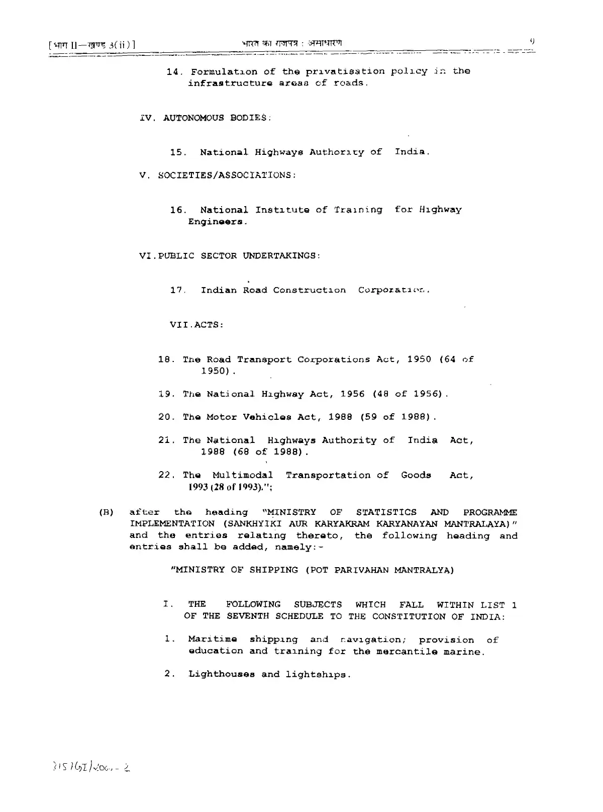
5after Schedule 2 › MINISTRY OF STATISTICS AND PROGRAMME IMPLEMENTATION
- MINISTRY OF SHIPPING (POT PARIVAHAN MANTRALYA)
- I. THE FOLLOWING SUBJECTS WHICH FALL WITHIN LIST 1 OF THE SEVENTH SCHEDULE TO THE CONSTITUTION OF INDIA:
- 1. Maritime shipping and navigation; provision of education and training for the mercantile marine.
- 2. Lighthouses and lightships. 315762/200-2
- 3. Administration of the Indian Ports Act, 1908 (15 of 1908) and the Major Port Trusts Act 1963 (38 of 1963) and ports declared as major ports.
- 4. Shipping and navigation including carriage of passengers and goods on inland waterways declared by Parliament by law to be national waterways as regards mechanically propelled vessels, the rule of the road on such waterways.
and 44 more
- 5. Ship-building and ship-repair industry.
- 6. Fishing vessels industry.
- 1. Floating craft industry.
- II. IN RESPECT OF THE UNION TERRITORIES:
- 8. Inland waterways and traffic thereon.
- III. IN RESPECT OF THE UNION TERRITORIES OF THE ANDAMAN AND NICOBAR ISLANDS AND THE LAKSHADWEEP:
- 9. Organisation and maintenance of mainland islands and inter-island shipping services.
- IV. OTHER SUBJECTS WHICH HAVE NOT BEEN INCLUDED UNDER THE PREVIOUS PARTS:
- 10. Legislation relating to shipping and navigation on inland waterways as regards mechanically propelled vessels and the carriage of passengers and goods on inland waterways.
- 11. Legislation relating to and coordination of the development of minor and major ports.
- 12. Administration of the Dock Workers (Regulation of Employment) Act, 1948 (9 of 1948) and the Schemes framed thereunder other than the Dock Workers (Safety, Health and Welfare) Scheme, 1961.
- 13. To make shipping arrangements for and on behalf of the Government of India/Public Sector Undertakings/State Governments/ State Government Public Sector Undertakings and autonomous bodies in respect of import of cargo on Free on Board/Free along Site and export on Cost and Freight/CostInsurance and…
- 14. Formulation of the privatisation policy in the infrastructure areas of ports, shipping and inland waterways.
- V. SUBORDINATE OFFICES:
- 15. Directorate General of Shipping.
- 16. Andaman Lakshadweep Harbour Works.
- 17. Directorate General of Lighthouses and Lightships.
- 18. Minor Ports Survey Organisation.
- VI. AUTONOMOUS BODIES:
- 19. Port Trusts at Mumbai, Calcutta, Kochi, Kandla Chennai, Mormugao, Jawahar Lal Nehru (Nhava Sheva), Paradip, Tuticorin, Visakhapatnam and New Mangalore.
- 20. Dock Labour Boards at Calcutta, Kandla, Chennai Mormugao and Visakhapatnam.
- 21. Inland Waterways Authority of India.
- 22. Seamen's Provident Fund Organisation.
- VII. SOCIETIES/ASSOCIATIONS:
- 23. National Institute of Port Management.
- 24. National Ship Design and Research Centre.
- 25. Seafarers Welfare Fund Society.
- VIII. PUBLIC SECTOR UNDERTAKINGS:
- 26. Shipping Corporation of India.
- 27. Hindustan Shipyard Limited.
- 28. Cochin Shipyard Limited.
- 29. Central Inland Water Transport Corporation Limited.
- 30. Dredging Corporation of India.
- 31. Hooghly Dock and Ports Engineers Limited. [PART II S3(ii)]
- IX. INTERNATIONAL ASPECTS:
- 32. International Maritime Organisation.
- X. ACTS:
- 33. The Indian Ports Act, 1908 (15 of 1908).
- 34. The Inland Vessels Act, 1917 (1 of 1917).
- 35. The Dock Workers (Regulation of Employment) Act 1948 (9 of 1948).
- 36. The Merchant Shipping Act, 1958 (44 of 1958)
- 37. The Major Port Trusts Act, 1963 (38 of 1963).
- 38. The Seamen's Provident Fund Act, 1966 (4 of 1966).
- 39. The Inland Waterways Authority of India Act 1985 (82 of 1985).
applied at schedule 2 › ministry MINISTRY OF SHIPPING (POT PARIVAHAN MANTRALYA) in the Rules after #253
read page break
Page 10 of 12
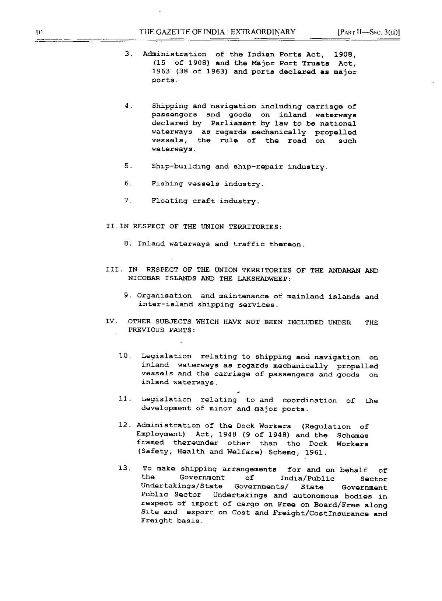
Page 11 of 12
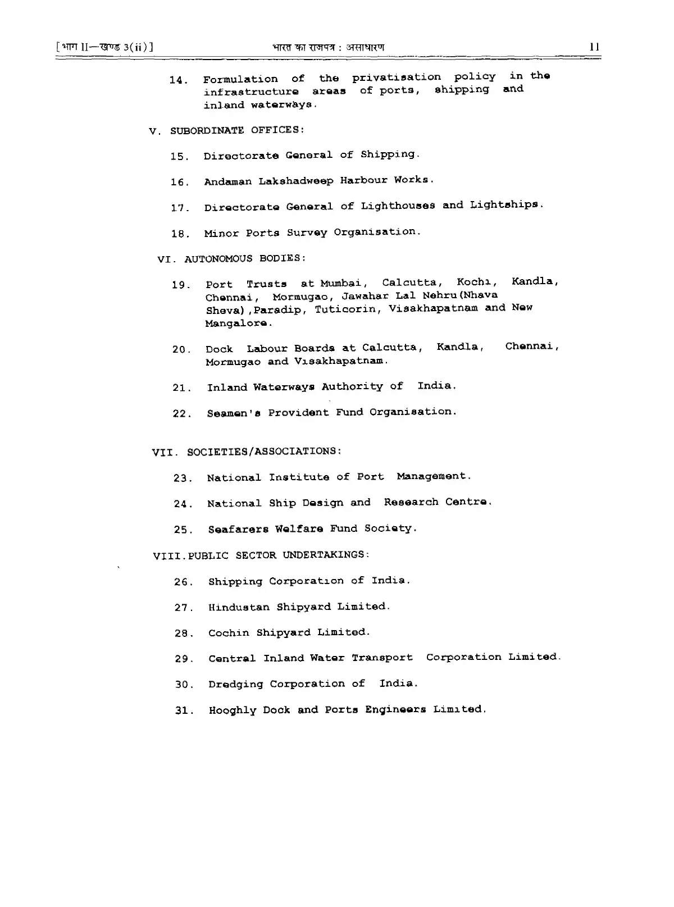
Page 12 of 12
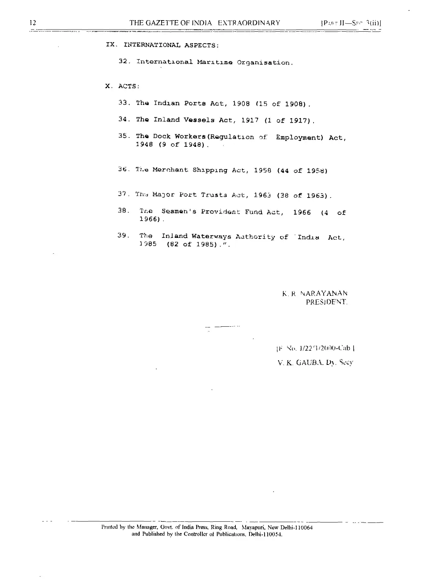
How this document was read
Changes placed by an inference rule
| Change | Rule | Status | What |
|---|---|---|---|
| 4 | loose | accepted | change 4: ministry MINISTRY OF RAILWAYS taken for ministry Ministry of Railways (Rail Mantralaya), Railway Board (Rail Board), named loosely |
From the Government of India (Allocation of Business) Rules, 1961 and their amendments, as published by the Cabinet Secretariat (cabsec.gov.in), read by orgpedia. The readings of the older scanned gazettes have known gaps.